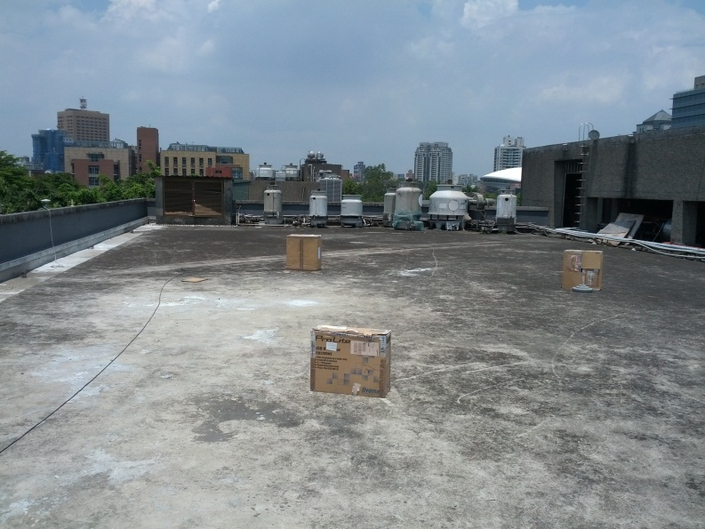
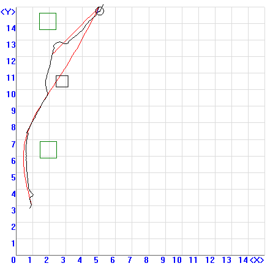

Case 2: Both path-planning system and ultrasonic system worked
In this test, a carton was dropped into the path right after the first path planning,
so the path-planning system did not take it into consideration
according to the decision flow.
|

|

|
| Picture of Test Field |
Plot shown in main station program |
- The green blocks were the obstacles detected by stereo camera.
- The black block were the obstacles detected by ultrasonic sensors.
They were manually drawn after the field test. The path segment digressing from
the red line indicated that the vehicle was once in real-time obstacle-avoidance mode.
- The red line was the path created by the path-planning system.
- The black line was the actual path of the vehicle.